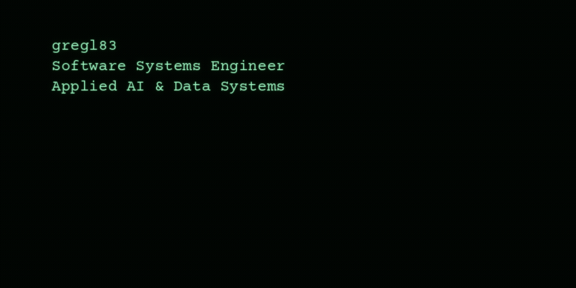

Source-backed example summaries for Agent Vigilo, bazel-paq, and Netband, manually reviewed for this preview. The weekly pipeline selects and summarizes projects automatically.
Resize the browser: at 600px or narrower, the closer mobile framing is selected. Above 600px, the spacious desktop framing is selected.

The GIF loops; selecting it opens the example project sources. Browser and GitHub animation preferences can affect playback.